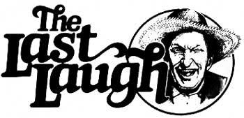

Well sir, if there's a time of year when all God's critters are busier than enny other time, it's jist bound to be thet halfway season 'twixt summer an' fall. The bees, squirrels, and bears are all a-layin' in stores agin' th' winter . . . and folks are canning garden victuals like Judgment Day was comin' a week from Wednesday and they're gittin' ready fer company.
Fact is, even the gen'rally indolent members of the Plumtree Crossin' Truth and Veracity League (fellers who, it must be admitted, were born tired and raised lazy) is engagin' in they own partic'lar form of harvestin' activity: what they calls "tourist shuckin' ".
Now all in all, you understand, us Barren County folks don't hold no grudges agin' our urban visitors. Most of 'em are friendly sorts who don't do nothin' more'n come this way once a year to git their necks cricked up over the fall leaves.
A few of thet annual flock of leaf peepers, howev'r, seem to harbor the peculiar notion-fist because they eat out at restyrants, 'stead of at their neighbors, and have more bills (partic'larly the sort what needs payin') in they wallets than their rural cousins have-thet they're some kind of superior bein's . . . whilst us country folks is all ignorant plow pullers who'd gladly give a person change for a three-dollar bill, iffen we only had thet much money to begin with!
It's types like them which the of boys at Plumtree Crossin' shuck cleaner'n dog-licked steak platters. Fer a case in point, the gents was all a-sittin' around the front porch of the store th' other day, surrounded by a display of apples, cider jugs, corncob pipes, and gen'rally useless knickerknacks (ev'ryone 'round here sets up some kinda tourist stand in the fall . . . it bein' mighty hard to refuse money that drives up to yer house and asks to spend itself). 'Bout midmornin', three touristers pulled up in one of them teacup-tiny furrin cars. Directly, the blubber-fowled citizen what was wedged in behind the wheel pointed a dollar seegar at Newt Blanchard and-eyin' Newt like the old feller was less'n a cull from nothin'-barked out, "Hey hillbilly, which road goes to Erosion Junction?"
"Well sir," Newt drawled in his humblest, hook-settin' voice, "iffen you kin maybe make yer way up here fer a minute, I'll see if I kin claryfy the matter fer ya."
At thet, the gaudy-ahirted tourist turned to his wife and said loudly, "Just my luck, Melba. This hick probably couldn't find the nose on his face." (O'course, he failed to add "iffen he was lookin' in a mirror" to the tail end of his remark . . . but the feller obviously weren't used to repartee!) Then he shoehorned hisself outa th' car and walrused up to the porch where Newt and the boys was restin'. Meanwhiles, Melba sauntered up to gaze at the tourist trinkets, while the third traveler-a gank-gutted youth with what seemed to be a permanent cream-curdlin' surliness camped on his face-ran inta the store and commenced leafin' through some of them stab-and-splatter detective magazines . . . and droppin' 'em, one by one, on the floor.
"Well, old-timer," the tourist said to Newt, "you think you're capable of telling me how to get there from here?"
"I reckon," Newt responded . . . and he up and pointed to a sign right across the road what said "EROSION JUNCTION 38 MILES".
By this time the traveler's wife was eyeballin' a rundown and kudzu-covered toolshed, about four by ten foot, what was standin' at half-mast back up from the store, and she asked Ott Blanchard, "Do you live in that house?"
The ol boy gave her a look sweet as Sunday School an' said, "Thet's right, ma'am. All of us codgers batch up there."
"Why, you poor things!" the woman said, lookin' like she wanted to pat each and ev'ry one of the fellers on the head.
"They's only one lone cot in there, too," Ott added, wistfullike. "O'course we don't pay it no mind. When nighttime rolls around, we jist stack ourselves up like logs at a sawmill." "Goodness!" Melba exclaimed. "This must be the real Appalachia! And is that rocking chair you're sitting in actually handmade? "
Ott took a minute to rub his hand over the caned white-oak rocker and then said, "Oh yes, ma'am. Fact, this seat was carved with nothin' but a busted Barlow knife back durin' the bad winters of ' 17, ' 18, ' 19, and '20."
Next thing you know, thet woman had grabbed aholt of her hubby's hand and purred, "Frederick, dear, I've simply got to have that chair. It's so . . . so . . . real! "
Well, the man sauntered over to Ott and said, "Pops, how about taking ten bucks for that rundown rocker? An old rube like you could buy a lot of tobacco with a tenapot."
"Pshaw!" Ott replied. "Ten dollars is lots more'n this old chair is worth."
When he heered thet, the tourist smiled. "Well then, how about five bucks?"
" 'Tain't worth thet much neither, mister."
"A dollar and a half?" the man yelled as he pulled out his wallet. "How about a dollar and a half?"
"Well now, I admit thet do sound like a reasonable offer," Ott agreed.
The man thrust out the money and barked, "Is it a deal?"
"I dunno, mister," Ott answered. "It ain't my chair."
Jist then the boy come a-rennin' out of the store, snatched the money outa his pa's outstretched hand, and hollered, "I wanna buy some cider."
The tourist feller started to snap at his son, but then-suspectin' thet this opening might finally provide him with a chance to show Plumtree Crossin's hayseeds a thing er three-looked over to Newt and said, "I guess you farmers don't have any hard cider around, do you?"
Newt reached back to one of the dustier jugs on the stand and said, "You might find this'un to have a little age on it, mister."
The tourist took a swig of the cider, made a big to-do of spittin' the mouthful out, and handed the jug back to Newt. "Why, what comes out of our city water system's stronger than that! Don't you rednecks ever drink real liquor?"
"We jist might have something a wee bit more potent settin' out back," Ott replied. "Think you could round up a taste fer th' gentleman, Purvis?"
So Purvis Jacobs ups and goes behind the store and grabs aholt of a demijohn of his best-beadin', chainsaw-primin', hunderd-and-fifty-proof 'shine. Directly he comes back out with the jug an' says, "Ott, this looks like middlin' strong cider."
"Hand me that jug!" barked the visitor. "I'll show you country bumpkins how to hold booze." So saying, thet slicker tilted the demijohn back and took a swig what had his Adam's apple jumpin' like a blue tick climbin' a coon tree!
Now, I have to admit thet-fer a good three seconds-the feller made a good show of hidin' his discomfort. But you could tell the 'shine were asimmerin' away in his innards, an' afore long he let out a screech an' set to holdin' his throat an hoppin' around queerer'n a chicken hatched in a thunderstorm.
Ott spoke up with a sincere note of apology hangin' like wid der's weeds on his voice. "Now they's no need to git yerself riled up, mister . . . iffen it means thet much to you I reckon we could let you sample a jug of the real strong brew."
At thet, the feller commenced to sputterin' an'-though it were impossyble to tell jist what he was a-sayin'-it were a safe bet thet they wasn't a "thank you kindly" tucked enny. where in his vocabylary!
No one ever knew fer sure, though, 'cause he herded his wife an' young'un inta the car afore he quite got his voice back (it were noted thet the city slicker's knees had commenced to wobblin' a bit by then), an' set off down the road . . . headin' dead away from Erosion Junction!
Well sir, it musta, been a flat quarter of an hour afore the members of the Plumtree Crossin' Tourist Shuckin' Club could stop rollin' with laughter long enough to recover their perches. Once they managed thet difficult feat, though, they all watched respectfully as Newt savored a full swig from Purvis's jug.
"Not bad, Mister Jacobs, not bad," said Mister Blanchard as he calmly wiped his chin and passed the demijohn. "O'course it is a tad on the weak side."
"Men occasionally stumble over the truth, but most of them pick themselves up and hurryoff, as if nothing had happened."
Winston Churchill
|
 |
|
|